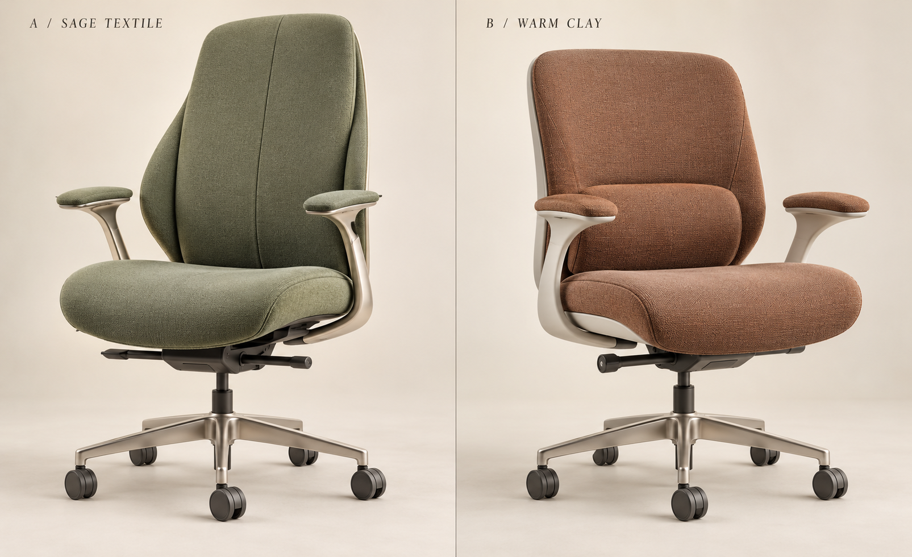
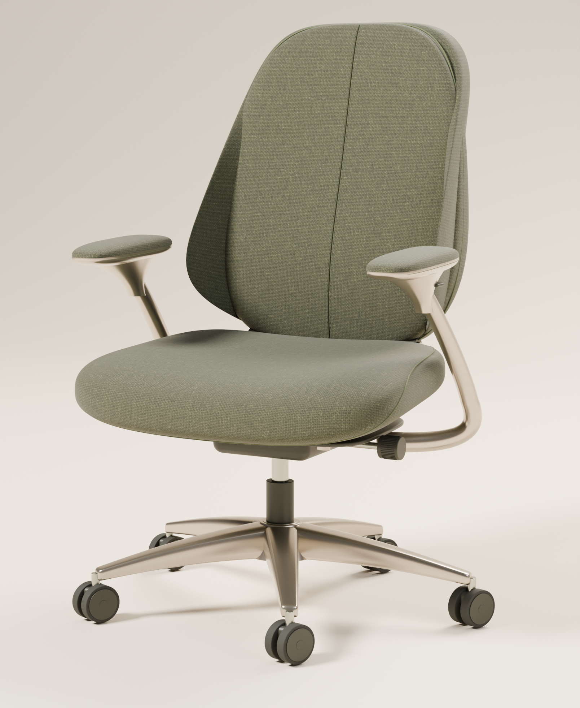

<!doctype html><html lang="zh-CN"><meta charset="utf-8"><title>Contour A · 造型对照</title><style>
*{box-sizing:border-box}body{margin:0;background:#e8e3d9;color:#30392e;font:14px Arial,sans-serif}header{height:60px;display:flex;align-items:center;justify-content:space-between;padding:0 26px;background:#f5f1e9}main{display:flex;justify-content:center;gap:2px;height:calc(100vh - 60px)}figure{margin:0;position:relative;width:calc((100vh - 60px)*.82);height:100%;overflow:hidden;background:#eee7da}figure img{width:100%;height:100%;display:block}.original img{width:200%;max-width:none}figcaption{position:absolute;bottom:12px;left:14px;background:#f7f3e8ed;padding:8px 12px;font-size:12px}a{color:inherit}select{padding:6px;border:1px solid #bfc4b4;background:#f5f1e9;color:inherit}
</style><header><span>原图 A / 固定机位逐轮对照</span><label>渲染版本 <select id="iteration"><option value="24-defined-weave">24 · 高清织纹与清晰接缝</option><option value="23-textile-light">23 · 织纹与侧光初调</option><option value="22-seam-gpu">22 · 缝线贴合与 GPU 降噪</option><option value="21-integrated-arm">21 · 连接曲面修正</option><option value="20-wrap-profile">20 · 侧翼轮廓</option><option value="19-final-study">19 · 扶手与座垫细化</option><option value="18-arm-tailoring">18 · 扶手倾角对照</option><option value="17-contour">17 · 缝线与光线</option><option value="16-proportions">16 · 比例回调</option><option value="15-tailoring">15 · 座垫体积对照</option><option value="14-color">14 · 色彩与侧翼厚度</option><option value="12-arm-wrap">12 · 扶手与侧翼</option><option value="10-base">10 · 底座与脚轮</option><option value="04-camera-lock">04 · 固定机位</option><option value="01-baseline">01 · 初始轮廓</option></select></label><span><a id="fullsize" href="reference-24-defined-weave.png" target="_blank" rel="noopener">查看渲染原图 ↗</a>　 <a href="/products/contour-01/">产品页 ↗</a></span></header><main><figure class="original"><figcaption>选定原图 A</figcaption></figure><figure><figcaption id="caption">24 · 高清织纹与清晰接缝</figcaption></figure></main><script>document.querySelector('select').addEventListener('change',e=>{document.querySelector('#render').src=`reference-${e.target.value}.png`;document.querySelector('#fullsize').href=`reference-${e.target.value}.png`;document.querySelector('#caption').textContent=e.target.selectedOptions[0].textContent})</script></html>
